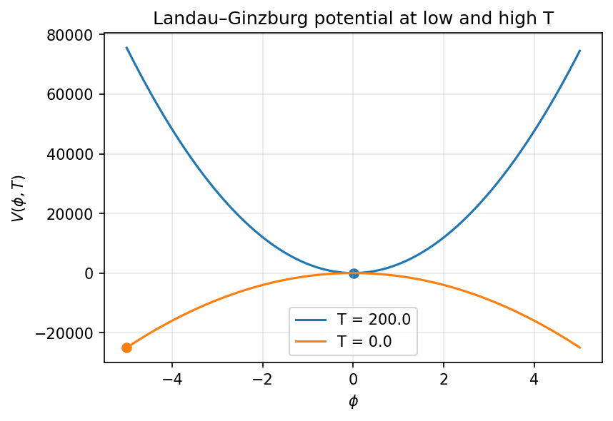
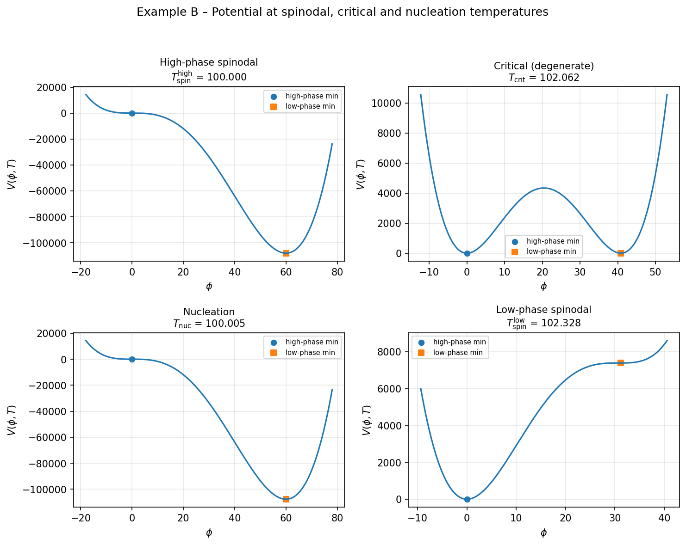
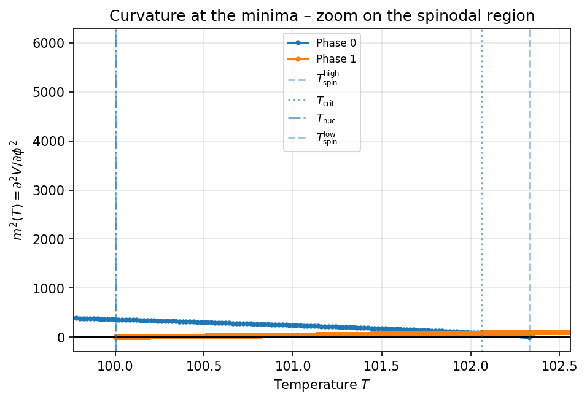
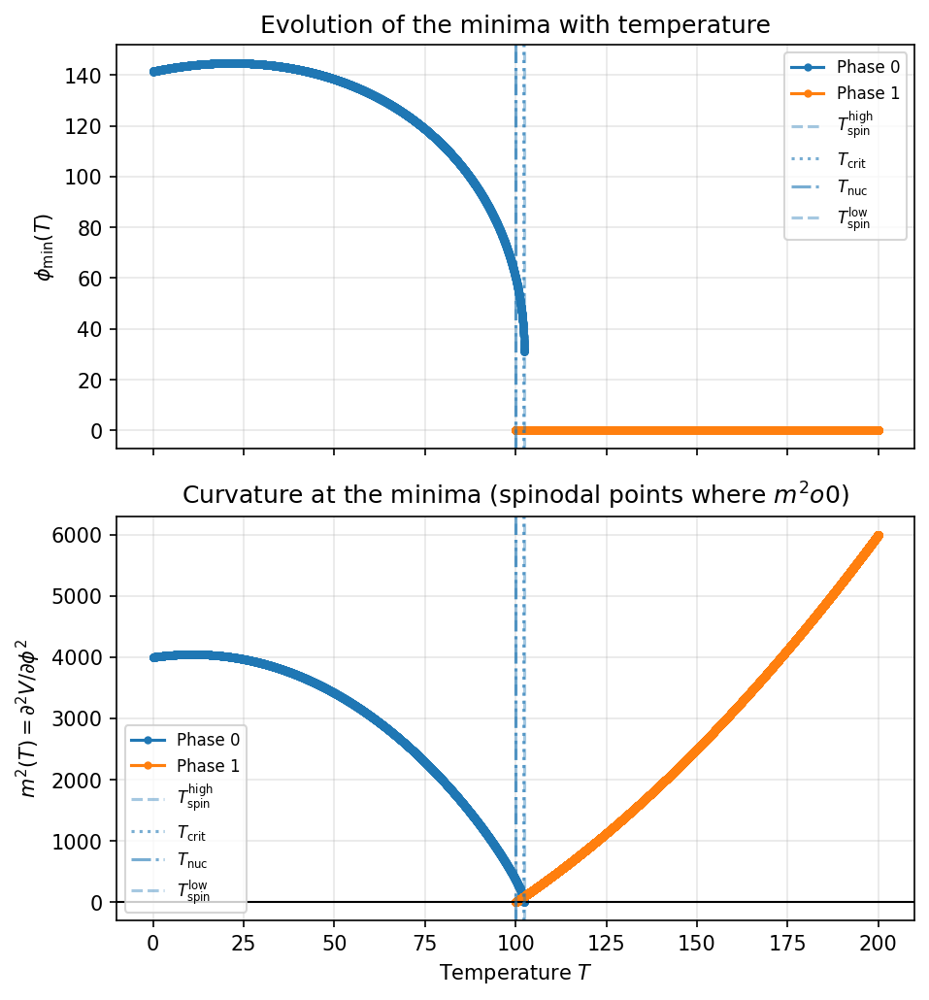

example_transitionFinder.md¶
Pedagogical showcase for
CosmoTransitions.transitionFinder with a 1D Landau–Ginzburg potential.
This example is meant to do for transitionFinder what
example_tunneling1D.py does for tunneling1D:
Take you from the bare potential \(V(\phi, T)\) all the way to
a coherent thermal history with
- traced phases,
- critical (degeneracy) temperatures,
- spinodal points, and
- the nucleation temperature \(T_n\) that satisfies \(S(T_n)/T_n \simeq 140\).
Everything is intentionally kept 1D in field space so that every plot can be read in a glance. The logic, however, is exactly what you would use in a real multi-field model.
Quick start¶
From the root of the repository:
python docs/examples/example_transitionFinder.py
````
What you will get:
1. A **configuration block** summarizing all model and numerical parameters.
2. A **Block A** section:
* seeds used to start the tracing;
* phases traced with `traceMultiMin` and cleaned with `removeRedundantPhases`.
3. A **Block B** section:
* critical temperatures from `findCriticalTemperatures`;
* nucleation temperatures and actions from `findAllTransitions`
(internally calling `tunnelFromPhase` and the bounce solvers).
4. Three plotted examples:
* **Example A** – Potential snapshots at low and high T.
* **Example B** – $T_{\text{spin}}$, $T_{\text{crit}}$, $T_{\text{nuc}}$
with V(\phi, T) at those special temperatures.
* **Example C** – Evolution of the minima $\phi_{\min}(T)$ and the
curvature $m^2(T) = \partial^2 V / \partial \phi^2$ along each phase.
5. A **final compact summary** with all key numbers:
$T_n, T_{\text{crit}}, S(T_n)$ and $S(T_n)/T_n$.
All figures are saved under:
```text
docs/examples/assets_transitionFinder/
figA_<case>.png
figB_<case>.png
figC_phi_<case>.png
figC_m2_<case>.png
where <case> is LG1D by default.
1. The model: 1D Landau–Ginzburg finite-T potential¶
The whole example is built around a textbook finite-temperature Landau–Ginzburg potential in one scalar field:
In the script, the parameters are:
# Model parameters: simple Landau–Ginzburg finite-T potential
D: float = 0.1
E: float = 0.02
lambda_: float = 0.1
T0: float = 100.0
Physical interpretation (schematically):
D,λcontrol the quadratic and quartic pieces → overall shape.Econtrols the cubic term → strength of the barrier between phases.T0is the temperature where the quadratic coefficient changes sign, setting the rough scale for symmetry restoration.
In the example, we work over a temperature interval:
T_LOW: float = 0.0
T_HIGH: float = 200.0
and a field range for scans/plots:
PHI_MIN: float = -5.0
PHI_MAX: float = 5.0
N_PHI: int = 1000
2. The minimal interface to transitionFinder¶
2.1 What transitionFinder actually needs¶
At the core, transitionFinder wants two kinds of information:
-
For tracing minima as a function of T (Block A):
-
a scalar free-energy density
f(x, T); - its mixed derivative
d2f_dxdt(x, T) = ∂/∂T (∂f/∂x); -
its Hessian
d2f_dx2(x, T) = ∂²f/∂x². -
For tunneling and critical temperatures (Block B/C):
-
the potential (or free energy) itself
V(x, T); - its gradient with respect to the fields
dV(x, T).
In our 1D example we simply take:
def free_energy(x: np.ndarray, T: float) -> float:
return float(V(x, T))
so “free energy” and “potential” coincide.
2.2 Potential and derivatives: 1D but vector-friendly¶
The showcase potential V is written in a way that:
- works with scalar φ for simple plots,
- and also with batched inputs of shape
(n, 1)forfindApproxLocalMininsidetraceMultiMin.
def V(phi: np.ndarray | float, T: float) -> np.ndarray | float:
phi_arr = np.asarray(phi, dtype=float)
if phi_arr.ndim == 0:
phi_val = phi_arr # scalar
elif phi_arr.ndim == 1:
# 1D field space: treat as array of φ values
phi_val = phi_arr # shape (n,)
elif phi_arr.ndim == 2:
# batched samples: (n_samples, 1)
if phi_arr.shape[1] != 1:
raise ValueError("For batched evaluation, use shape (n_samples, 1).")
phi_val = phi_arr[:, 0]
else:
raise ValueError(f"Unsupported phi shape {phi_arr.shape} for this test potential.")
V_val = (
D * (T**2 - T0**2) * phi_val**2
- E * T * phi_val**3
+ 0.25 * lambda_ * phi_val**4
)
return V_val
The first derivative (gradient) is:
In code, with shapes chosen to be compatible with both
transitionFinder and tunneling1D:
def dV(phi: np.ndarray | float, T: float) -> np.ndarray:
phi_arr = np.asarray(phi, dtype=float)
if phi_arr.ndim == 0:
phi_val = phi_arr
dV_val = (
2.0 * D * (T**2 - T0**2) * phi_val
- 3.0 * E * T * phi_val**2
+ lambda_ * phi_val**3
)
return np.array([dV_val], dtype=float)
if phi_arr.ndim == 1:
if phi_arr.size != 1:
raise ValueError("This showcase gradient assumes a single scalar field.")
phi_val = phi_arr[0]
dV_val = (
2.0 * D * (T**2 - T0**2) * phi_val
- 3.0 * E * T * phi_val**2
+ lambda_ * phi_val**3
)
return np.array([dV_val], dtype=float)
if phi_arr.ndim == 2:
if phi_arr.shape[1] != 1:
raise ValueError("For batched evaluation, use shape (n_samples, 1).")
phi_val = phi_arr[:, 0]
dV_val = (
2.0 * D * (T**2 - T0**2) * phi_val
- 3.0 * E * T * phi_val**2
+ lambda_ * phi_val**3
)
return dV_val.reshape(-1, 1)
raise ValueError(f"Unsupported phi shape {phi_arr.shape} in dV.")
The second derivative entering the Hessian is:
def d2V_dphi2(phi: np.ndarray | float, T: float) -> np.ndarray | float:
phi_arr = np.asarray(phi, dtype=float)
m2 = 2.0 * D * (T**2 - T0**2) - 6.0 * E * T * phi_arr + 3.0 * lambda_ * phi_arr**2
return m2
From this we build the mixed derivative and Hessian required by
traceMinimum / traceMultiMin:
def free_energy(x: np.ndarray, T: float) -> float:
# In this 1D example, x is a length-1 array with x[0] = φ
return float(V(x, T))
def d2f_dxdt(x: np.ndarray, T: float) -> np.ndarray:
# ∂/∂T (∂V/∂φ) = 4D T φ - 3E φ²
x_arr = np.atleast_1d(np.asarray(x, dtype=float))
if x_arr.size != 1:
raise ValueError("d2f_dxdt assumes a single scalar field.")
phi = x_arr[0]
val = 4.0 * D * T * phi - 3.0 * E * phi**2
return np.array([val], dtype=float)
def d2f_dx2(x: np.ndarray, T: float) -> np.ndarray:
# 1×1 Hessian containing ∂²V/∂φ²
x_arr = np.atleast_1d(np.asarray(x, dtype=float))
if x_arr.size != 1:
raise ValueError("d2f_dx2 assumes a single scalar field.")
phi = x_arr[0]
m2 = d2V_dphi2(phi, T)
return np.array([[float(m2)]], dtype=float)
Take-away: To plug your own model into
transitionFinder, you need to provide exactly these five callbacks:V,dV,free_energy,d2f_dxdt,d2f_dx2. Everything else in the example is there to make the physics transparent.
3. Block A – Building phases with traceMultiMin¶
3.1 Seeds: where to start tracing?¶
We construct simple seeds by scanning the potential at fixed T:
def scan_minimum_1D(T: float) -> float:
phi_grid = np.linspace(PHI_MIN, PHI_MAX, N_PHI)
V_vals = np.asarray(V(phi_grid, T), dtype=float)
idx_min = int(np.argmin(V_vals))
return float(phi_grid[idx_min])
Then we pick:
# High-T symmetric-phase seed
T_seed_high = 180.0
phi_high = scan_minimum_1D(T_seed_high)
# Low-T broken-phase seed
T_seed_low = 20.0
phi_low = scan_minimum_1D(T_seed_low)
seeds = [
(np.array([phi_high], dtype=float), T_seed_high),
(np.array([phi_low], dtype=float), T_seed_low),
]
When you run the script you will see:
[Seeds] Initial seed points for traceMultiMin:
(T = 180.000, phi = ... ) V = ...
(T = 20.000, phi = ... ) V = ...
Idea:
- One seed for the symmetric minimum at high T (around \(\phi \approx 0\)).
- One seed for the broken minimum at low T \(|(\phi)| > 0\).
traceMultiMinplus the internalfindApproxLocalMinwill figure out additional branches if needed.
3.2 Tracing parameters: what really matters¶
Core numerical knobs:
# traceMultiMin / traceMinimum controls
DELTA_X_TARGET: float = 0.05 # target step in field space
DTSTART_FRAC: float = 1e-4 # dtstart as fraction of (T_HIGH - T_LOW)
TJUMP_FRAC: float = 1e-4 # temperature jump between traces
They are interpreted as:
-
DELTA_X_TARGET– the target displacement in field space between consecutive accepted points on the branch. Smaller → more points in T, smoother phases, but more work. -
DTSTART_FRAC– the initial step size in T, as a fraction of(T_HIGH - T_LOW). The effectivedtstartis:
dt_scale = T_HIGH - T_LOW
dtstart_abs = DTSTART_FRAC * dt_scale
TJUMP_FRAC– how far in T to jump beyond the last point of a trace to look for new phases usingfindApproxLocalMin.
These are passed directly to traceMultiMin:
phases = TF.traceMultiMin(
f=free_energy,
d2f_dxdt=d2f_dxdt,
d2f_dx2=d2f_dx2,
points=seeds,
tLow=T_LOW,
tHigh=T_HIGH,
deltaX_target=DELTA_X_TARGET,
# given as fractions; rescaled internally to absolute ΔT
dtstart=DTSTART_FRAC,
tjump=TJUMP_FRAC,
single_trace_args={
"dtabsMax": 20.0,
"dtfracMax": 0.25,
"dtmin": 1e-4,
"minratio": 1e-2,
},
local_min_args={"n": 200, "edge": 0.05},
)
single_trace_args are forwarded to traceMinimum:
dtabsMax,dtfracMax– ceiling on the step size in T, both in absolute and relative terms.dtmin– minimal |ΔT| before the trace is considered stalled.minratio– criterion for Hessian degeneracy (when the phase “dies”).
local_min_args go to findApproxLocalMin and control how densely we scan
for hidden minima along straight segments in field space.
After tracing we clean duplicates:
phases_mut = dict(phases)
TF.removeRedundantPhases(f=free_energy, phases=phases_mut)
phases_clean = dict(phases_mut)
The script prints a compact summary:
[Block A] Phases after removeRedundantPhases: N
Phase 0: T in [T_min, T_max] phi in [φ_min, φ_max] (N_points support points)
...
If you only care about phases: Up to here you already have the full phase structure encoded in the
Phaseobjects returned bytraceMultiMin.
4. Block B – Critical temperatures and nucleation¶
Once the phases exist, Block B asks:
- Where are different phases degenerate in free energy?
- When does tunneling actually become efficient?
4.1 Critical temperatures: findCriticalTemperatures¶
Minimal usage:
crit_transitions = TF.findCriticalTemperatures(
phases_clean,
V,
start_high=False,
)
Each entry in crit_transitions is a dictionary with:
"Tcrit"– critical temperature where two phases are degenerate;"high_phase","low_phase"– keys of the correspondingPhaseobjects;"high_vev","low_vev"– VEVs at (T_{\text{crit}});"trantype" = 1(by construction).
The example prints something like:
[Critical temperatures] Found 1 degeneracy points.
# 1: Tcrit = 98.123 high_phase = 0, low_phase = 1
Interpretation:
- The high-T branch is stable above
Tcrit. - Below
Tcrit, the low-T branch is energetically favored.
4.2 Nucleation: findAllTransitions and nuclCriterion¶
The nucleation criterion used in the example is the standard
implemented as:
TARGET_S_OVER_T: float = 140.0
def nuclCriterion(S: float, T: float, target: float = TARGET_S_OVER_T) -> float:
return S / (T + 1e-100) - target
and passed to findAllTransitions via tunnelFromPhase_args:
tunnel_args = {
"Ttol": 1e-2,
"maxiter": 80,
"phitol": 1e-6,
"overlapAngle": 45.0,
"nuclCriterion": nuclCriterion,
"verbose": False,
"fullTunneling_params": {},
}
full_transitions = TF.findAllTransitions(
phases_clean,
V,
dV,
tunnelFromPhase_args=tunnel_args,
)
What these arguments control:
Ttol– absolute tolerance on the nucleation temperature (root finder);maxiter– maximum number of function evaluations;phitol– tolerance in the local minimizations at fixed T;overlapAngle– prune target phases whose directions in field space are too aligned with each other (irrelevant in 1D but useful in multi-field models);nuclCriterion– your condition for “efficient nucleation”;fullTunneling_params– forwarded topathDeformation.fullTunneling, when available.
Each element of full_transitions is a dictionary with keys:
"Tnuc"– nucleation temperature;"low_vev","high_vev"– minima connected by the bounce;"low_phase","high_phase"– keys of the corresponding phases;"action"– Euclidean action (S(T_n));"instanton"– backend-dependent instanton object;"trantype" = 1(first-order).
If no tunneling solution is found, full_transitions is empty and the
script warns you.
4.3 Marrying (T_{\text{crit}}) and (T_n)¶
The last piece of Block B is:
TF.addCritTempsForFullTransitions(
phases_clean,
crit_transitions,
full_transitions,
)
This analyzes the graph of phases, their critical transitions, and
the supercooled transitions returned by findAllTransitions in order
to attach, to each nucleation transition, the corresponding critical
temperature (if one exists) under the key "crit_trans".
From that point on, a single tdict in full_transitions gives you:
Tcritthroughtdict["crit_trans"]["Tcrit"](if any),Tnucthroughtdict["Tnuc"],- their associated phases and VEVs.
5. Minimal recipe: using transitionFinder with your own model¶
If you want the shortest possible checklist, here it is:
- Write your model:
def V(x: np.ndarray, T: float) -> float: ...
def dV(x: np.ndarray, T: float) -> np.ndarray: ...
- Wrap it for Block A:
def free_energy(x, T): return float(V(x, T))
def d2f_dxdt(x, T): # ∂/∂T (∂V/∂x)
...
def d2f_dx2(x, T): # Hessian w.r.t. x
...
- Choose seeds (field values and temperatures) where you are sure there is a minimum:
seeds = [
(x_seed1, T_seed1),
(x_seed2, T_seed2),
...
]
- Trace phases:
phases = TF.traceMultiMin(
free_energy,
d2f_dxdt,
d2f_dx2,
points=seeds,
tLow=T_LOW,
tHigh=T_HIGH,
deltaX_target=DELTA_X_TARGET,
)
TF.removeRedundantPhases(f=free_energy, phases=phases)
- Critical temperatures:
crit_transitions = TF.findCriticalTemperatures(phases, V)
- Nucleation temperatures:
full_transitions = TF.findAllTransitions(
phases,
V,
dV,
tunnelFromPhase_args={"nuclCriterion": nuclCriterion},
)
TF.addCritTempsForFullTransitions(phases, crit_transitions, full_transitions)
The example script does all of this, but with extra diagnostics, prints and plots so that you can see what is going on.
6. The four examples A–D¶
6.1 Example A – Potential snapshots at low and high T¶
Function: example_A_potential_snapshots(case)
What it does:
-
Plots \(V(\phi, T)\) at:
-
T_lo = 0.0, -
T_hi = 200.0. -
Marks the minima obtained by a crude scan (
scan_minimum_1D).
Physically:
- At very high T, only the symmetric minimum near \(\phi \simeq 0\) survives.
- At very low T, the broken minimum appears at \(|\phi| > 0\).
This is the “zeroth-order picture”: what phases exist at the extremes of the thermal history.
6.2 Example B – (T_{\text{spin}}), (T_{\text{crit}}) and (T_n)¶
Function: example_B_transition_temperatures(...)
Steps:
-
Pick the “main” first-order transition:
-
the one with largest nucleation temperature among
full_transitions. -
Extract characteristic temperatures:
-
T_spin(high phase)– lowest T where the high-T phase is still traced (symmetric minimum disappears below this). T_crit– degeneracy temperature attached byaddCritTempsForFullTransitions(if available).T_nuc– nucleation temperature fromfindAllTransitions.-
T_spin(low phase)– highest T where the low-T phase first appears (broken minimum ceases to exist above this). -
Print them in a compact table, together with:
-
the action \(S(T_n)\),
-
the ratio \(S(T_n)/T_n\) and the target
TARGET_S_OVER_T. -
Plot four panels of \(V(\phi, T)\), one for each characteristic T:
-
high-phase spinodal,
- critical,
- nucleation,
- low-phase spinodal.
In each panel, the φ-range is chosen adaptively so that the relevant minima sit nicely inside the x-axis, and the corresponding minima are marked with different markers (high-phase vs low-phase branch).
6.3 Example C – Evolution of minima and curvature¶
Function: example_C_minima_evolution(...)
This example is about seeing the phases breathe as the Universe cools.
For each Phase in phases:
- sample its temperature grid
phase.T; - extract the field values at the minimum
phase.X[:, 0]; - compute the curvature \(m^2(T) = \partial^2 V / \partial \phi^2\) at each of those points.
We then produce two figures:
-
A combined figure with two stacked panels:
-
Top: \(\phi_{\min}(T)\) for all phases (each phase as a colored line).
- Bottom: \(m^2(T)\) along the same phases, with horizontal line at
m² = 0.
On both panels we mark:
T_spin(high),T_crit,T_nuc,T_spin(low),
whenever they are available.
This lets you visually track how the minimum moves in φ and how the curvature goes to zero at the spinodals.
- A second figure with only \(m^2(T)\), but zoomed in the interval between the two spinodals (plus a small margin). This is your “magnifying glass” for the region where the phase becomes metastable and then unstable.
6.4 Where to go from here?¶
There is no dedicated others examples, like example_D yet, but the idea
is to encourage the next steps of de CosmoTransition code. Here are a few natural
directions that we need to do:
-
Move beyond 1D. Replace the single scalar with a genuine multi-field potential and turn on the
pathDeformationbackend. In that regime the pruning controlled byoverlapAnglebecomes very useful. -
Gravitational waves Build the gravitational waves params of the transition and see how strong they are, how is the respective power spectrum and save all the relevant params for the FOPT
- Scan over model parameters.
Loop over different
(D, E, λ, T0)and record how \(T_{\text{crit}}, T_n, S(T_n)/T_n\) shift. This is essentially a 1D “phase diagram” in parameter space, especially if we want to see which params effects how strong de FOPT really is.
The current example is designed to be a clean starting point for these explorations.
7. Final summary and how to read it¶
At the end of run_all, we build a compact summary dictionary:
summary = {
"model": {...},
"tracing": {...},
"nucleation": {...},
"phases": {
"0": {"T_min": ..., "T_max": ..., "phi_min": ..., "phi_max": ..., "n_points": ...},
...
},
"transitions": [
{
"high_phase": "...",
"low_phase": "...",
"Tnuc": ...,
"S_Tn": ...,
"S_over_Tn": ...,
"Tcrit": ... or None,
},
...
],
}
and print it with print_final_summary(summary).
Typical output:
Final compact summary (temperatures and actions)
===============================================
Transition #1: 0 → 1
Tnuc = ...
Tcrit = ...
S(Tn) = ...
S(Tn)/Tn = ... (target = 140.0)
(All parameters controlling the behaviour of the example are listed
at the beginning of the run in print_configuration().)
This is the “one-look” view of your thermal history: which phase you start in, which phase you end up in, the key temperatures, and how well the nucleation condition is satisfied.
8. Checklist: parameters you actually want to touch¶
When adapting this example to your own model, the most important knobs are:
Model¶
D,E,lambda_,T0(or whatever defines your potential)T_LOW,T_HIGH– the temperature window where you expect interesting physics.
Tracing (Block A)¶
DELTA_X_TARGET– smaller → more points in T, smoother phases.DTSTART_FRAC– how aggressively you start stepping in T.TJUMP_FRAC– how far you jump in T to search for new phases.-
single_trace_args– especially: -
dtmin– too small and you might prematurely stop a trace; minratio– controls when the Hessian is considered singular.
Nucleation (Block B)¶
TARGET_S_OVER_Tor more generallynuclCriterion.Ttol,maxiter– precision and robustness of the search for \(T_n\).phitol– local minimization tolerance at fixed T.overlapAngle– only relevant for multi-field potentials.
9. Conclusion¶
example_transitionFinder.py is designed as a bridge between the abstract
API of CosmoTransitions.transitionFinder and what a cosmologist actually wants
to know:
- Which phases exist as the Universe cools?
- When do they become degenerate?
- When does tunneling really start to happen?
- How do the minima and curvatures behave near the spinodals?
By keeping the potential 1D and fully analytic, every plot and every number
can be checked by hand if you wish. Once you are happy with how
traceMultiMin, findCriticalTemperatures and findAllTransitions behave in
this controlled environment, you can safely upgrade to your full model and
re-use exactly the same logic.
--
10. Images¶



